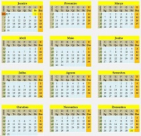

( -1942), que nasceu no Estado de Nova Iorque, entrou para a história como o inventor do jogo do voleibol, para a qual ele deu originalmente o nome de "Minnonette.” Morgan realizou seus estudos de graduação da escola de Springfield da ACM (Associação Cristã de Moços), onde conheceu James Naismith, que, em 1896, inventou o basquetebol.
William George Morgan foi o inventor do voleibol, originalmente chamado "Mintonette", nome derivado do jogo badminton que ele resolveu mudar para melhor refletir a natureza do esporte.

1870 foi um ano comum do século XIX do actual Calendário Gregoriano, da Era de Cristo, e a sua letra dominical foi B, teve início a um sábado e terminou também a um sábado.
